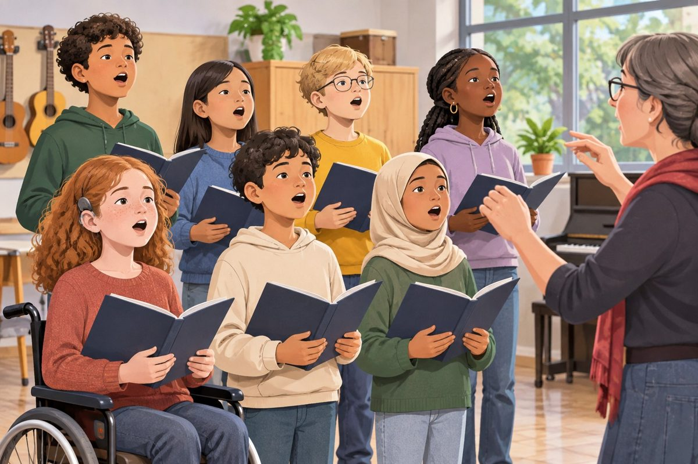

Stimmlage

Die Stimmlage zeigt, wie hoch oder tief ein Mensch singen kann. Jeder Mensch hat einen eigenen Tonraum, den man Stimmumfang nennt. Der Ton entsteht im Kehlkopf, der im Hals sitzt. Dort liegen zwei Stimmbänder, die beim Singen schwingen.
Schwingen sie schnell, klingt der Ton hoch. Bei langsamen Schwingungen klingt er tief. Kinderstimmen sind meist hell, weil die Stimmbänder noch kurz sind. Im Stimmbruch wächst der Kehlkopf, und die Stimmen von Jungen werden tiefer.
Bei Frauen und Mädchen unterscheidet man Sopran und Alt. Der Sopran ist die höchste Singstimme. Der Alt ist die tiefere Frauenstimme und klingt dunkler. Männer singen meist als Tenor, Bariton oder Bass.
Der Tenor ist die hohe Männerstimme. Der Bariton liegt zwischen Tenor und Bass. Der Bass ist die tiefste Stimme von allen. Auch Instrumente haben Lagen, die Flöte klingt hoch und die Tuba tief.
Im Chor singen mehrere Stimmlagen gleichzeitig. Zusammen ergeben sie einen vollen Klang. Der Chorleiter prüft, welche Stimmlage zu welchem Sänger passt. Wer in seiner Lage singt, schont die Stimme.
Zum Aufwärmen helfen Atemübungen und leises Summen. Die Stimme ist ein Instrument, das jeder Mensch immer bei sich trägt.
Den Text zum Anhören gibt es hier: Hörtext öffnen
Zu diesem Sachtext gibt es ein Arbeitsblatt mit Lückentext, Wortspeicher, Hörverstehen und Suchsel, jeweils mit Lösung, im Snice-Shop auf eduki.
Text: Snice Unterricht (eigener Text). Bild: KI-generiertes Symbolbild (eigene Erstellung).